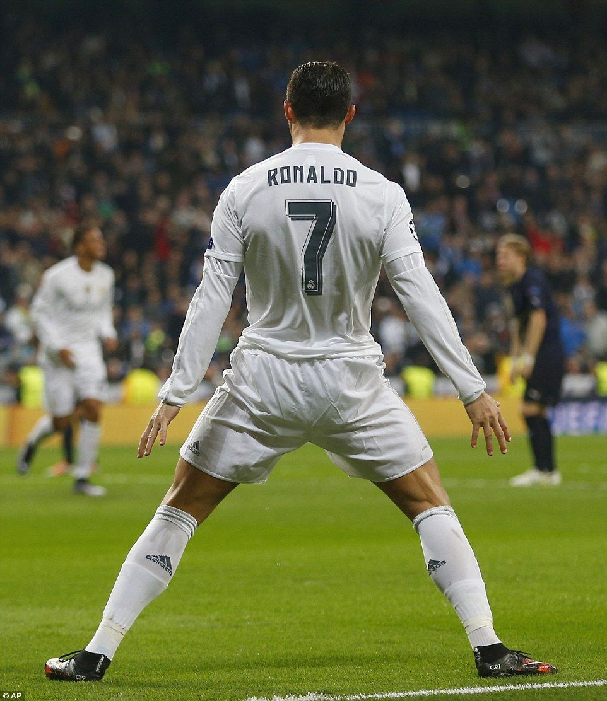

1. A Grande Final do Euro 2016
No dia 10 de julho de 2016, Portugal conquistou o seu primeiro grande título europeu. Apesar de ter saído lesionado no início do jogo contra a França, Cristiano Ronaldo assumiu a liderança fora do relvado, apoiando os colegas até ao golo decisivo na prorrogação.
Este momento ficou marcado como o ponto mais alto do seu percurso ao serviço da Seleção Nacional.
2. Três Jogos Inesquecíveis
-
🏆 Três golos contra a Suécia (2013): Uma exibição decisiva no jogo de apuramento que garantiu a presença de Portugal no Mundial.
-
⭐ Golo de Pontapé de Bicicleta (2018): Um golo frente à Juventus na Liga dos Campeões, aplaudido pelos adeptos adversários.
-
⚽ Três golos contra a Espanha (2018): Uma exibição individual muito boa com um golo de livre direto aos 88 minutos de jogo, dando o empate a Portugal.
3. A Famosa Celebração "Siuuu"
A celebração icónica de Cristiano Ronaldo — em que corre para a linha lateral, salta, roda no ar e aterra de braços abertos a gritar "Siuuu!" — surgiu de forma natural num jogo amigável pelo Real Madrid em 2013, nos Estados Unidos.

Festejo icónico do Cristiano Ronaldo
Para rever os golos e momentos marcantes, consulta o Portal da Federação Portuguesa de Futebol.